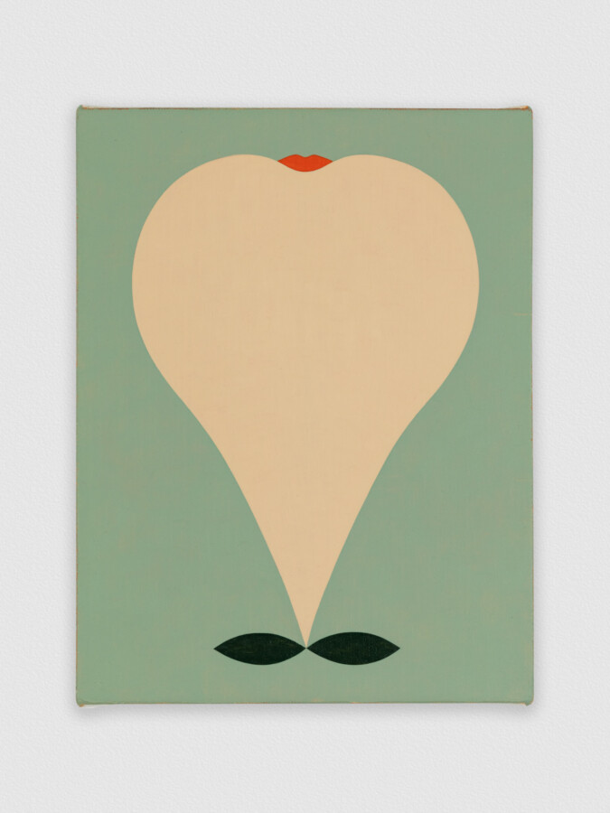

Alice Tippit: Rose Obsolete
What is the difference between “looking” and “seeing”? How is meaning made and how do forms signify? These questions have concerned Chicago-based artist Alice Tippit (b. 1975) for more than a decade. Her paintings and works on paper generate multiple layers of meaning through poetic techniques like metaphor, serving as indirect references rather than clear, straightforward representations. The images in Tippit’s paintings float between the familiar and the enigmatic––recognizable forms and shapes are removed from any clear context or obvious meaning. Included in this exhibition are a selection of Tippit’s works from the past ten years as well as new commissioned works.
This exhibition is Alice Tippit’s first museum solo presentation and is accompanied by a fully-illustrated catalog published by DePaul Art Museum, distributed by the University of Chicago Press, designed by Omnivore, with essays from Ionit Behar, Johanna Fateman, and Mary Simpson.
Alice Tippit: Rose Obsolete is organized by DePaul Art Museum and curated by Ionit Behar, PhD.